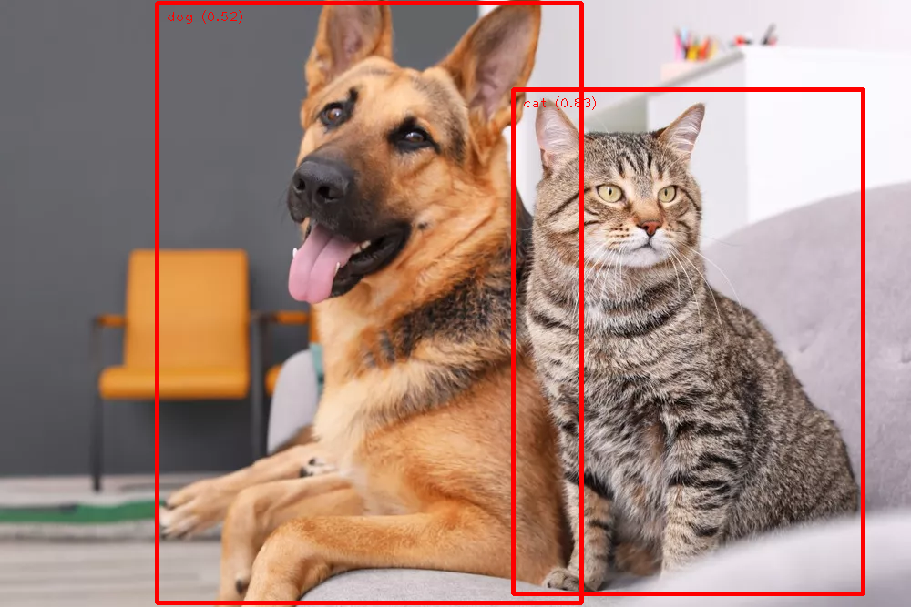

С помощью этого сайта вы можете идентифицировать объекты на изображении
Как обнаружить объекты на изображении
- 1. Нажмите внутри области размещения файлов, чтобы выбрать и загрузить файл изображения, или перетащите туда свой файл.
- 2. Ниже выберите точность обнаружения, максимальное количество объектов, которые вы хотите обнаружить, и цвет для ограничивающих рамок.
- 3. Нажмите кнопку «Обнаружить», чтобы начать процесс обнаружения объектов.
- 4. После обнаружения всех объектов на странице появляется полученное изображение.
- 5. Если вы авторизованы, то вы сможете просмотреть это изображение в истории ваших изображений.
Часто задаваемые вопросы
- В: Сколько времени требуется для обнаружения объектов на изображении?
- О: Это зависит от размера входного изображения. Обычно это занимает несколько секунд.
- В: Какой метод обнаружения объектов вы используете?
- О: Мы используем инструмент MediaPipe, созданный компанией Google. Используемая модель - EfficientDet-Lite0. Подробнее
- В: Какие объекты вы можете обнаружить на изображениях?
- О: На изображении мы можем обнаружить 80 различных объектов. Полный список обнаруживаемых объектов
- В: Какие форматы изображений вы поддерживаете?
- О: Мы поддерживаем изображения JPG, PNG, JPEG.
Пример работы нашего веб-сайта

Контакты: